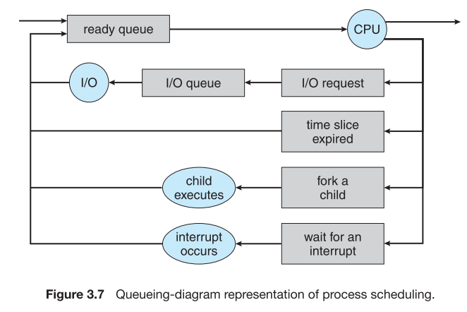

A common representation of process scheduling is a queueing diagram, such as

Figure 3.7 說明
-
Each rectangular box represents a queue. Two types of quesues are present:
- the ready queue and a set of device queues.
- a set of device queues
- The circles represent the resources that server the queues,
and arrows indicate the flow of processes in the system.